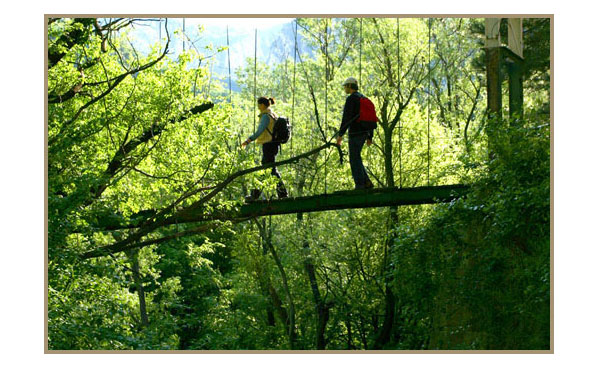
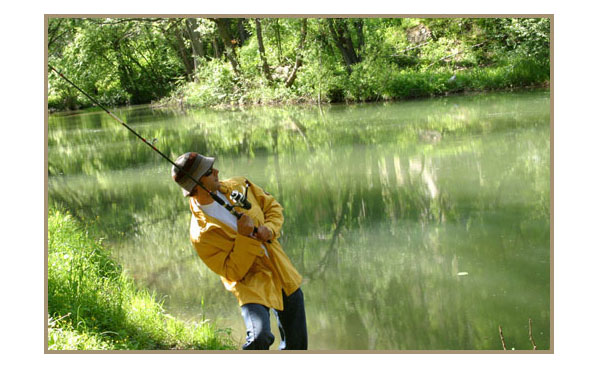

Okolina Etno Centra Rtanj pogodna je za ekstremne sportove kao sto su paraglajding i planinarenje.Etno Centar Rtanj Balašević raspolaže sa dva teniska terena na otvorenom, terenom za odbojku, košarku i mali fudbal.Gostima su takođe na raspolaganju i bilijar sala i sala za stoni tenis.

Idealni klimatski uslovi i netaknuta priroda omogućavaju posetiocima da se osećaju dobro, što је podstaklo razvoj sportsko - rekreativnog, ekološkog i planinarskog turizma. Biciklizam je takođe veoma zastupljen na Rtnju.
Za zaljubljenike u zimski i planinski turizam postoji ski-staza sa ski liftom.
Bogatstvo prirode, čist vazduh, nadmorska visina, uređeni sportski tereni i trim staza okružena borovom šumom idealni su za pripreme sportista. Na raspolaganju su: fudbalski teren, košarkaško i rukometno igralište sa reflektorima za večernje treninge.
